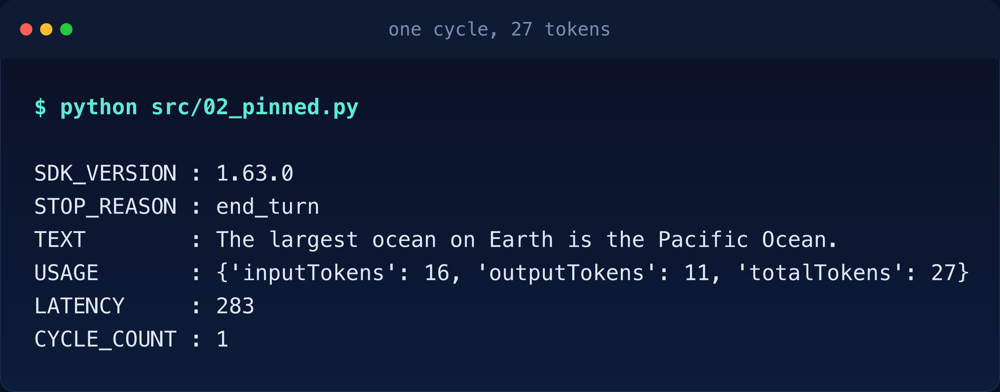
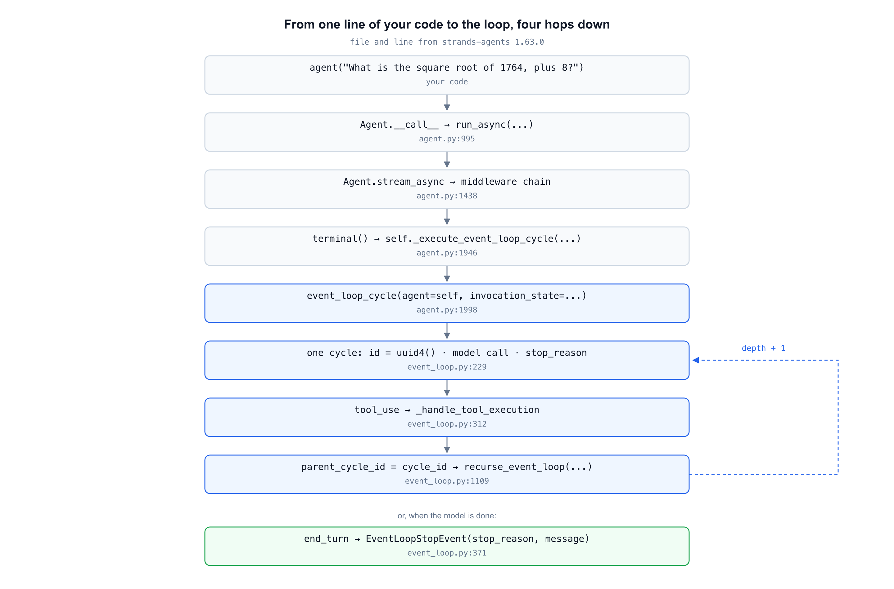
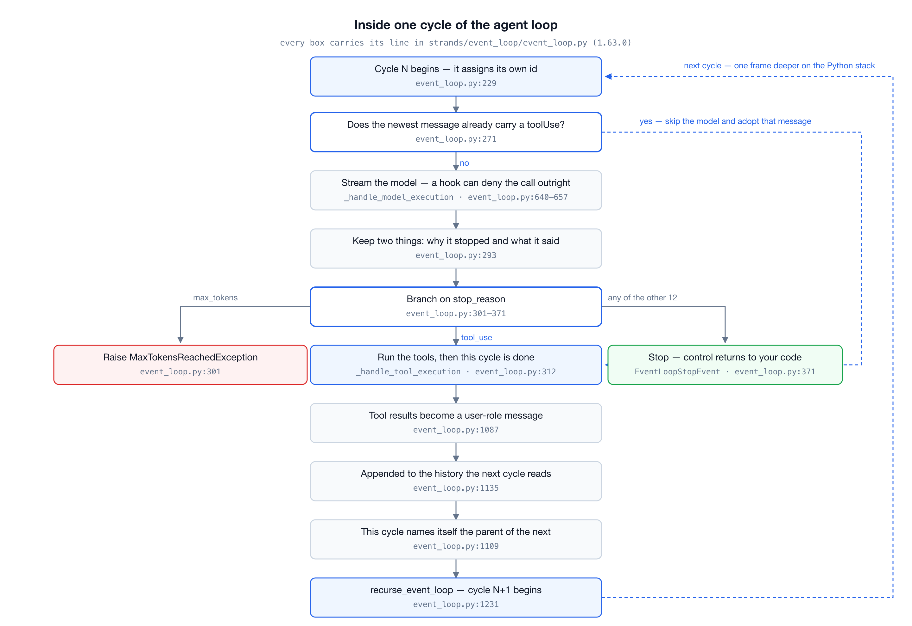
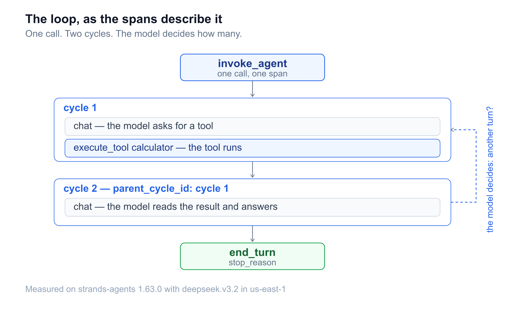
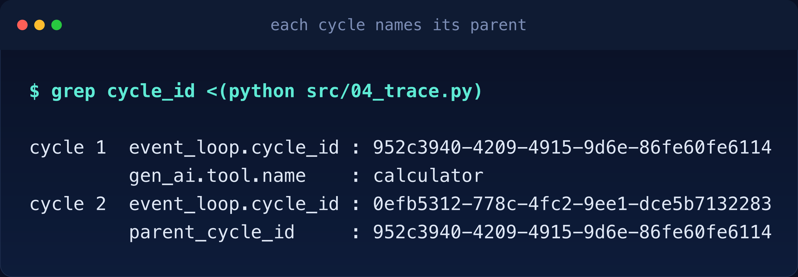
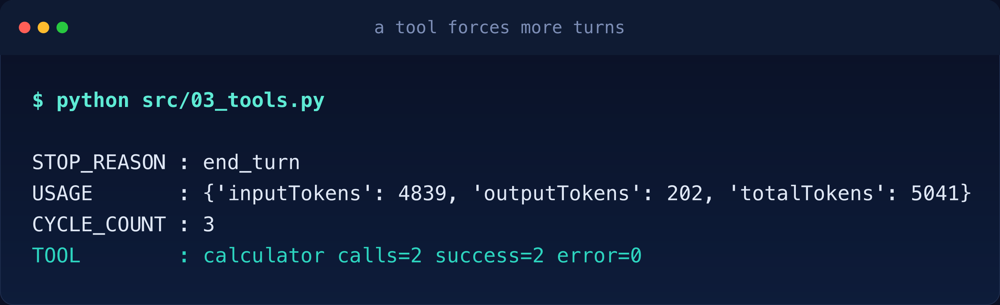
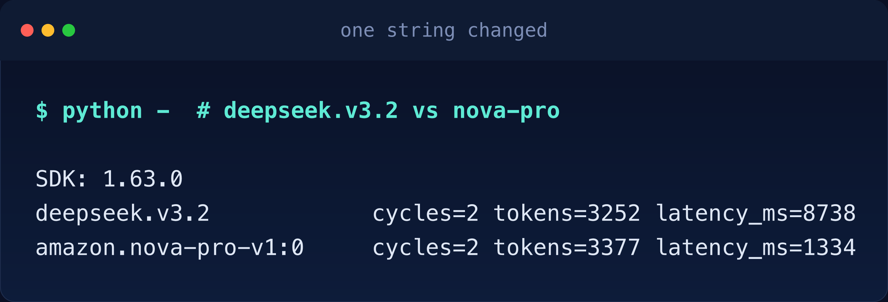

Verified on 2026-11-01 against
strands-agents1.63.0, Python 3.11 and Bedrock inus-east-1. Every SDK source line quoted below comes from that version and carries its file and line. Every number came out of a run, and the setup steps live inREADME.md. The model isdeepseek.v3.2on Amazon Bedrock.
This is the foundation article of the series. The other seven start from a use case and work outward to what you can build. This one starts from the smallest agent that runs and works inward to the one function that makes Strands an agent framework rather than a chat client. Read this one and the other seven get easier.
Here is a complete agent. It answers a general-knowledge question on Amazon Bedrock.
from strands import Agent
from strands.models import BedrockModel
agent = Agent(model=BedrockModel(model_id="deepseek.v3.2", region_name="us-east-1"))
agent("What is the largest ocean on Earth?")The model and the region are pinned so the run is reproducible. Leave them out and Agent() picks its own defaults before any of your code runs and how it does that gets a section near the end.

The Pacific Ocean. One cycle, 27 tokens, end_turn. The model never needed a tool, so the loop ran once and exited. Four lines of my code and the SDK did the rest.
That output tells me what happened. It does not tell me who decided. I did not write a loop. Something called the model once, read the reply and stopped, and I cannot point at the line where that happened. So here is the question this article answers: in those four lines, where is the loop? Not what an agent loop is in the abstract. Which function holds it, what one turn does and what makes it stop. The rest of the article takes that one question down to the source and back up again.
I drew the chain I got from reading the source, then checked each hop against a run, because tracing five files by hand is how you end up misremembering them.

Start at the top. __call__ does almost nothing; it hands the prompt to a coroutine and blocks.
# agent.py:995, inside Agent.__call__
return run_async(lambda: self._invoke_async_and_flush(prompt, ...))# agent.py:1017, inside _invoke_async_and_flush
return await self.invoke_async(prompt, **kwargs)invoke_async delegates to stream_async, which wraps the work in a middleware chain: a list of wrappers around the real work, with a terminal stage at the center that does the work itself. The chain is invoked with that terminal attached:
# agent.py:1765, inside stream_async
async for event in self._middleware_registry.invoke(
AgentStreamStage,
middleware_context,
self._make_agent_stream_terminal(...),
):The terminal is the last hop before the loop and its body is one call:
# agent.py:1946, inside the AgentStreamStage terminal
events = self._execute_event_loop_cycle(ctx.invocation_state, structured_output_context, invocation_context)That method is a thin wrapper with one real job: call the loop and retry if the context overflowed.
# agent.py:1998, inside Agent._execute_event_loop_cycle
events = event_loop_cycle(
agent=self,
invocation_state=invocation_state,
structured_output_context=structured_output_context,
invocation_context=invocation_context,
)So the loop is not in Agent. Agent owns the state, the tools and the history, and hands a mutable invocation_state dict to a free function named event_loop_cycle, in strands/event_loop/event_loop.py. Every turn happens there. The other two parameters in that call are companions you can ignore for now: structured_output_context carries typed output settings and invocation_context carries request-scoped values.
Here is the whole picture first. One cycle is six decisions and every one of them has a line number. The rest of this section walks the same path more slowly.

A cycle begins by giving itself an identity.
# event_loop.py:229
# Initialize cycle state
invocation_state["event_loop_cycle_id"] = uuid.uuid4()Then it decides whether it needs the model at all. If the newest message in history already carries a tool request, the tools have not run yet, so the cycle adopts that message instead of generating a new one.
# event_loop.py:271
# Skip model invocation if the latest message contains ToolUse
elif _has_tool_use_in_latest_message(agent.messages):
stop_reason = "tool_use"
message = agent.messages[-1]The check behind that name is four lines of dictionary walking.
# event_loop.py:86, inside _has_tool_use_in_latest_message
latest_message = messages[-1]
content_blocks = latest_message.get("content", [])
for content_block in content_blocks:
if "toolUse" in content_block:
return TrueOtherwise the cycle calls the model. What comes back is a stop event and the cycle keeps two things from it: why the model stopped and what it said.
# event_loop.py:293
stop_reason, message = stop_event.stop_reason, stop_event.messageThe model call behind that is not one request either. _handle_model_execution streams the response and yields a ModelStopReason at the end of it, and it carries a branch worth knowing about: a BeforeModelCallEvent hook (a callback you register on the agent) can deny the call outright, in which case no request is made and the cycle still ends cleanly.
# event_loop.py:657, inside _handle_model_execution
if before_model_call_event.cancel:
message: Message = {"role": "assistant", "content": [{"text": cancel_text}]}
stop_reason: StopReason = "end_turn"
yield ModelStopReason(stop_reason=stop_reason, message=message, usage=usage, metrics=metrics)So stop_reason is not always the model’s decision. Your code can set it and the loop obeys it the same way. The snippet skips one detail: a second hook can still convert the cancel into a retry (event_loop.py:672-684), so a denied call is a decision and not necessarily an ending.
Everything after that branches on stop_reason. A truncated response is not a loop condition, it is an error, and the cycle raises rather than repairing itself.
# event_loop.py:301
if stop_reason == "max_tokens":
raise MaxTokensReachedException(...)A tool request hands the turn to tool execution and ends this cycle.
# event_loop.py:312
if stop_reason == "tool_use":
tool_events = _handle_tool_execution(stop_reason, message, agent=agent, ...)
async for tool_event in tool_events:
yield tool_event
returnAnything else ends the invocation. This is the standard exit and the one your code normally sees.
# event_loop.py:371
yield EventLoopStopEvent(stop_reason, message, agent.event_loop_metrics, invocation_state["request_state"])That is one cycle: take an id, maybe call the model, read why it stopped, then run tools, raise or stop. Three exits from one function, no scheduler.
The SDK traces each cycle as a span, and the span tree of a two-cycle run shows the same shape the source just described:

A tool does not return a value to the model. It returns a message, and that message is in the user role:
# event_loop.py:1087, at the end of _handle_tool_execution
tool_result_message: Message = {
"role": "user",
"content": [{"toolResult": result} for result in tool_results],
}Then it is appended to the same history the next cycle reads:
# event_loop.py:1135
await agent._append_messages(tool_result_message, invocation_context=invocation_context)That is the whole mechanism. The model asks for a tool, the answer arrives addressed as if the user had sent it, and the model reads its own request and the answer back on the next turn. Nothing is threaded through arguments or hidden state; the conversation itself is the only channel. Printing the shape of that conversation on each turn makes it obvious:
TURN cycle=94b99f5d messages=1
user[text]
TURN cycle=f3dfd557 messages=3
user[text] | assistant[text+toolUse] | user[toolResult]
FINAL : user[text] | assistant[text+toolUse] | user[toolResult] | assistant[text]Turn one sees one message. Turn two sees three, including the tool request the model wrote itself. The loop is a growing conversation, and that growth is the second half of the cost story below.
This is the part I had wrong. I expected a while somewhere. No while drives the cycles. After the tools finish, this cycle records itself as the parent of whatever comes next:
# event_loop.py:1109, at the end of _handle_tool_execution
invocation_state["event_loop_parent_cycle_id"] = invocation_state["event_loop_cycle_id"]and then re-enters the same function, one frame deeper:
# event_loop.py:1231
events = recurse_event_loop(
agent=agent,
invocation_state=invocation_state,
structured_output_context=structured_output_context,
invocation_context=invocation_context,
)The name is not a metaphor. recurse_event_loop calls event_loop_cycle, and it records the recursion the same way it records everything else, as a child trace:
# event_loop.py:556, inside recurse_event_loop
cycle_trace = invocation_state["event_loop_cycle_trace"]
recursive_trace = Trace("Recursive call", parent_id=cycle_trace.id)
cycle_trace.add_child(recursive_trace)That has a consequence you can measure: the number of turns an agent takes is also the depth of its Python stack. It also has a ceiling: each turn adds a few async-generator frames, so a very long tool chain hits Python’s recursion limit before any limit the SDK sets. Wrapping that one function is enough to watch it happen.
cycle 1 begins (recursion depth 1)
cycle 2 begins (recursion depth 2)
cycle 2 ends
cycle 1 ends
STOP_REASON : end_turn
CYCLE_COUNT : 2The two ids the source writes are readable too, without going near the tracer. A hook can print them straight out of invocation_state:
MODEL CALL cycle=5e8cebb8 parent=-
TOOL RESULT cycle=5e8cebb8 parent=-
MODEL CALL cycle=6913ddf0 parent=5e8cebb8Cycle two names cycle one as its parent, which is exactly what event_loop.py:1109 assigned. The span tree says the same thing, because the tracer reads the same dict.

If you want this as a test rather than a story, the counts and the ids are plain attributes:
assert result.stop_reason == "end_turn"
assert result.metrics.cycle_count >= 2
assert "calculator" in result.metrics.tool_metrics
print(result.metrics.accumulated_usage)Note >= 2 rather than == 2. The number of turns is an output of the model, so an exact assertion will flake.
stop_reason is a closed set, and the type declares it in one place:
# types/event_loop.py:39
StopReason = Literal[
"cancelled", "checkpoint", "content_filtered", "end_turn",
"guardrail_intervened", "interrupt", "limit_output_tokens",
"limit_structured_output_attempts", "limit_total_tokens", "limit_turns",
"max_tokens", "stop_sequence", "tool_use",
]Thirteen values and, in the common case, exactly one of them keeps the loop going. tool_use leads to another cycle. The one exception is structured output: when it is enabled, an end_turn routes through _end_structured_output_turn and can force one more cycle (event_loop.py:356 and :435). Everything else ends the invocation.
They fall into four groups and knowing which group a value belongs to tells you who decided:
end_turn and stop_sequence. It answered and stopped.limit_turns, limit_output_tokens, limit_total_tokens and limit_structured_output_attempts, from the limits you pass to the call, plus cancelled from agent.cancel().content_filtered and guardrail_intervened.max_tokens raises rather than returns, and checkpoint and interrupt pause the invocation so it can be resumed later.So “what makes the loop stop” has two halves. One value continues and two are the model’s own choices; the other ten are boundaries or pauses that you, the runtime, or a guardrail set. An agent that only stops when it feels like stopping is not something you can put in production and getting control of that is what the rest of this series is for.
Everything above is what the code does. This section is why I think it does it that way, inferred from the structure rather than stated anywhere by the SDK. Three choices, one each for the three findings above:
while. Each cycle is a generator on the stack and events produced deep inside tool execution bubble up through every frame by a plain yield, with no queue and no dispatcher in between. The trace tree and the call stack end up with the same shape, so one structure serves debugging, metrics and the stream you subscribe to. A while loop would need an explicit event bus to buy the same property.stop_reason is a closed set of thirteen. Every exit from the loop has to be handled by something: a limit enforcer counts it, a hook can veto it, a tracer reports it and your test can assert on it. A fixed enumeration makes all four possible without parsing model prose, and it is what turns “the agent stopped” from an observation into an interface.The four lines at the top pinned the model and the region. An Agent() with neither resolves both on its own before any of your code runs, and the resolution is worth reading. The region resolves in one line, and it is a four-step fallback: your argument, then the boto session, then the environment, then a constant.
# bedrock.py:323
resolved_region = region_name or session.region_name or os.environ.get("AWS_REGION") or DEFAULT_BEDROCK_REGION# bedrock.py:53
DEFAULT_BEDROCK_MODEL_ID = "global.anthropic.claude-sonnet-4-6"
_DEFAULT_BEDROCK_MODEL_ID = "{}.anthropic.claude-sonnet-4-6"
DEFAULT_BEDROCK_REGION = "us-west-2"Two constants for one default look redundant until you read the function that chooses. It builds a region-prefixed id for regions that need one and warns that the default may change:
# bedrock.py:1979, inside BedrockModel._get_default_model_with_warning
if DEFAULT_BEDROCK_MODEL_ID != _DEFAULT_BEDROCK_MODEL_ID.format("us"):
return DEFAULT_BEDROCK_MODEL_IDIn 1.63.0 that comparison is always true, because one constant is global.-prefixed and the other formats to us.. So the region-prefixed branch below it never runs, and the default model is a fixed string wherever you are. I read the branch first, assumed it applied, and was wrong; reading the two constants above it takes ten seconds.
Constructing the provider confirms all of it, with no network call:
BOTO_REGION : us-east-1
DEFAULT_BEDROCK_REGION : us-west-2
DEFAULT_BEDROCK_MODEL_ID: global.anthropic.claude-sonnet-4-6
PREFIXED_VARIANT : us.anthropic.claude-sonnet-4-6
RESOLVED_MODEL_ID : global.anthropic.claude-sonnet-4-6
CLIENT_REGION : us-east-1The region in the docs was never the region in my run. The SDK took the boto session’s us-east-1 at step two of the fallback and never reached the constant. The source says which line did it.
A cycle is not cheap, and the model is not the reason. The plain question cost 27 tokens. The same agent with one tool cost 5041, across three cycles. That is a different run from the recursion demo above: this time the model asked for the calculator twice, so three cycles instead of two.

Most of that is the tool’s schema, which rides along on every single turn. One calculator is 5500 characters of JSON before you ask it anything, because the docstring becomes the description and the type hints become the schema:
TOOL_COUNT : 1
TOOL_NAME : calculator
SPEC_CHARS : 5500The history travels with it too. Turn two sent three messages back rather than one, so the input side grows on every turn whether or not the question did.
So the loop pays for your tools on every turn, not once per conversation. That is the half of the bill your tools control. The other half belongs to the model, and it is not tokens. I ran the same agent and the same question twice with one string swapped, the model id and kept everything else fixed:

The token counts land within four percent of each other and the latency differs by more than six times. Nothing in the loop explains that gap, and nothing in my code does either.
The loop is recursive. I assumed a while and spent an afternoon looking for one. A recursive loop means turn count is stack depth, and the context-overflow retry is a second recursion on top of it:
# agent.py:2022, on ContextWindowOverflowException
events = self._execute_event_loop_cycle(invocation_state, structured_output_context, invocation_context)The default model does not follow the region in this version, despite the branch that looks like it does. Read the constants, not the branch.
The deprecation warning on calculator has teeth, and the replacement is not equivalent:
This does change the security boundary: calculator only ever evaluated an
expression checked against an AST allowlist, while shell executes arbitrary
commands, so review it against your threat model before switching.from strands_tools import calculator # AST allowlist, safe, deprecated
from strands.vended_tools import shell # arbitrary commands, supportedI stayed on calculator for this walkthrough on purpose. Swapping to shell to silence a warning is the kind of change that passes review and quietly widens what the agent may do.
Strands is a library that runs inside your process. It ships no scheduler, no database and no console of its own, and it does not want to. If what you need is a managed runtime, a gateway, identity brokering, or a catalog of agents shared across an organization, that is the layer above this one, which is where a service like Bedrock AgentCore sits. Reach for the loop when you want to own the loop.
git clone https://github.com/pinxiong/strands-in-action
cd strands-in-action/usecases/01-the-loop
uv venv --python 3.11
VIRTUAL_ENV=.venv uv pip install strands-agents==1.63.0 strands-agents-tools==0.8.11Confirm the pinned version landed before you trust any output.
.venv/bin/python -c "from importlib.metadata import version; print(version('strands-agents'))"Then run the scripts that produced every number above.
python src/01_default.py # fails on purpose: the default model is geo-gated
python src/02_pinned.py # one cycle, one answer
python src/03_tools.py # more cycles, one tool
python src/04_trace.py # the span tree
python src/05_recursion.py # the loop as stack depth
python src/06_cycle_ids.py # cycle id and parent id per turn
python src/07_tool_schema.py # what one tool adds to every turn
python src/08_defaults.py # the resolved region and model, no API call
python src/09_messages.py # the conversation shape the model sees each turnTakeaways, in the order the source hands them over. The loop lives in event_loop_cycle, not in Agent. A cycle calls the model, reads stop_reason and either runs tools, raises or stops. The next cycle is a recursive call, so turn count is stack depth. Tools answer as a user-role message, so the conversation the model reads grows on every turn. Only one of the thirteen stop reasons continues the loop (two if you count the structured-output retry), two are the model’s own choices and the rest are boundaries or pauses you, the runtime or a guardrail set. And the defaults behind an unpinned Agent() are one line each, at bedrock.py:323 and bedrock.py:1979.